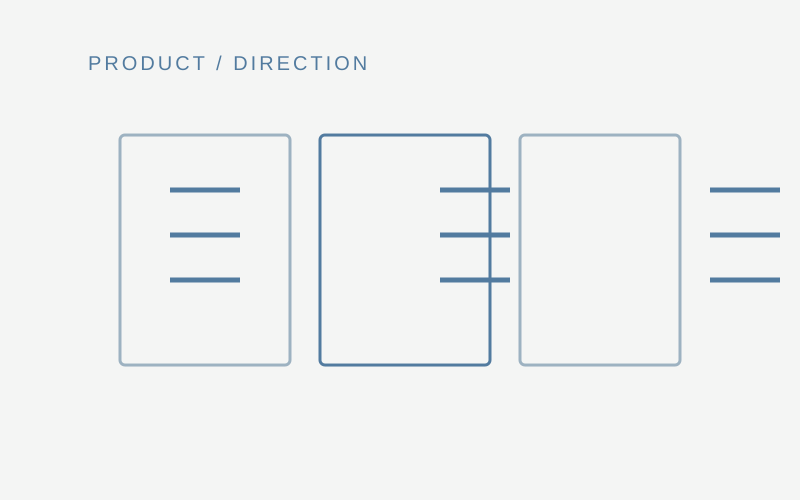

Student outcomes
Mobile App, UI & UX Design
Student projects that developed user-centered digital concepts through interface design, interaction flows and visual communication.
Collection 02
Selected teaching outcomes in which students applied design methods to digital products, interfaces and interactive experiences.

Student outcomes
Student projects that developed user-centered digital concepts through interface design, interaction flows and visual communication.
Student outcomes
Web projects focused on information structure, layout, responsive behavior and practical communication on the web.

Student outcomes
Interactive projects exploring spatial media, immersive learning and the role of interface cues in digital environments.
Learning environment
A project-based learning space founded to support cross-disciplinary digital-media projects, collaboration and student development.